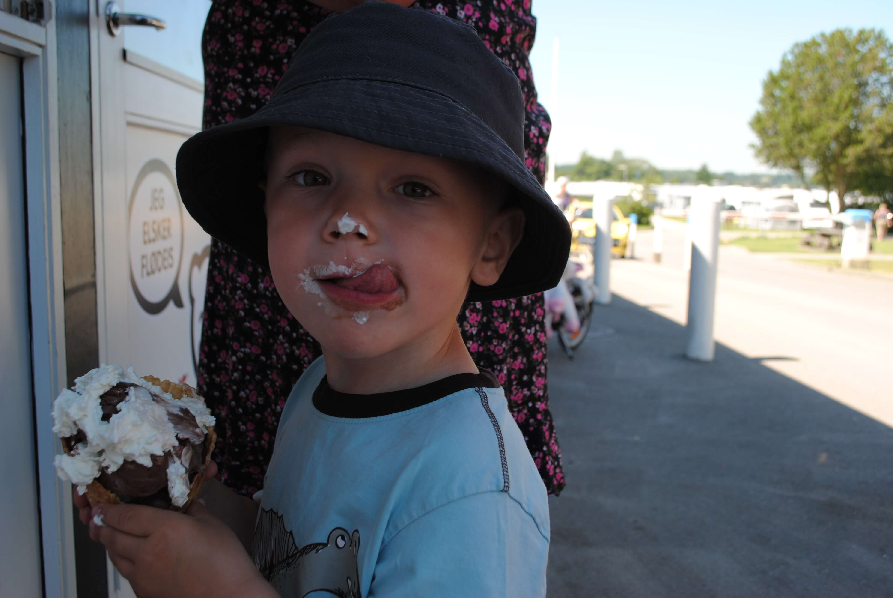

Gratis aktiviteter i sommeren
af Trine Hjortshøj
Udgivet d. 23/5, 2018

Sommeren er over os, og ligesom køerne på økodagen, trænger vi alle til at blive lukket ud og blive luftet. Men hvad skal vi lave? Hvordan kommer vi ud, uden at børnene bliver udsat for den værste sol, og hvor sker der noget i sommerlandet?
Trafiklegepladsen i fælledparken
Bor du i København og omegn bugner det af sjove aktiviteter for børn - du skal bare vide de er der. Trafiklegepladsen i fælledparken er en af de gratis aktiviteter dit barn med garanti vil elske! Har du et barn der skal til at lære at cykle, tilbyder Trafiklegepladsen nu en cykellegestue, med holdundervisning i cykling. Det er ganske gratis og med garanti motiverende for dit barn.
Naturlegepladsen i Valby
Midt i Valby ligger en grøn oase, for både børn og voksne. Lige når du kommer ind på området bliver du mødt af en stor træ-legeplads, med gangbroer, hoppe-pæle og sjove legeområder. Under legestativet er blødt sand og ved siden af er en lille bakke, med sti rundt om til toppen.
Er du mere til boldleg, frisbee, eller volleyball, er der et kæmpe grønt område til det. Ude i siden er der sporadisk placeret træer, der kan give skygge til de mindste. En oplagt mulighed for at pakke et tæppe og en picnic kurv og slå lejr i Københavns grønneste oase.
Den indendørs legeplads i Blegdamsremisen
Har du brug for en lille pause fra solen, er den indendørs legeplads i Blegdamsremisen et rigtigt godt alternativ. Det fungerer ligesom et legeland, men det er gratis at komme ind og du må selv medbringe din egen madpakke. På legepladsen er der både plads til at folde sig ud motorisk, og til kreativ fordybelse.
Kender du andre sjove legepladser i København? Del det gerne med os:
Kristine Jensen
Vi har været rundt og prøve en del, men er især vilde med den legepladsen ved Rosenvængets Alle - den kan vi anbefale!Anne Nielsen
Super godt fif med naturlegepladsen, det må vi prøve.Tanja Olsen
Vi har været der en del gange efterhånden, husk solcreme!Elisabeth Hansen
Det er en god idé at tage vandflasker med, der er haner man kan tappe vand fra flere steder.Nyeste blog indlæg
Skrevet d. 20/05/2018
Blogindlæg 2Skrevet d. 21/05/2018
Blogindlæg 3Skrevet d. 23/05/2018

Kontakt info
MinidrysAnja Line Y. Hansen og Trine Hjortshøj
Cphbusiness Lyngby
Nørgaardsvej 30
2800 Lyngby
info@minidrys.dk